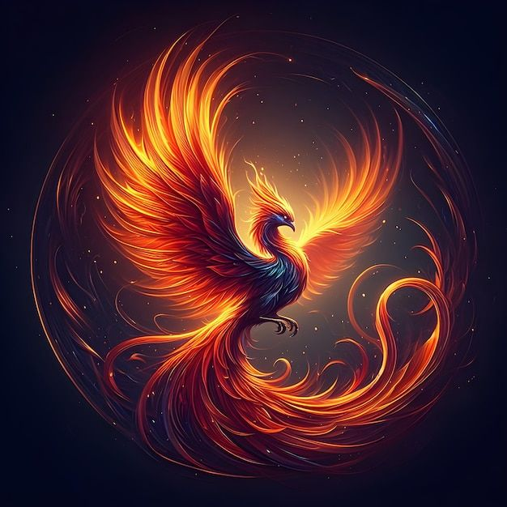
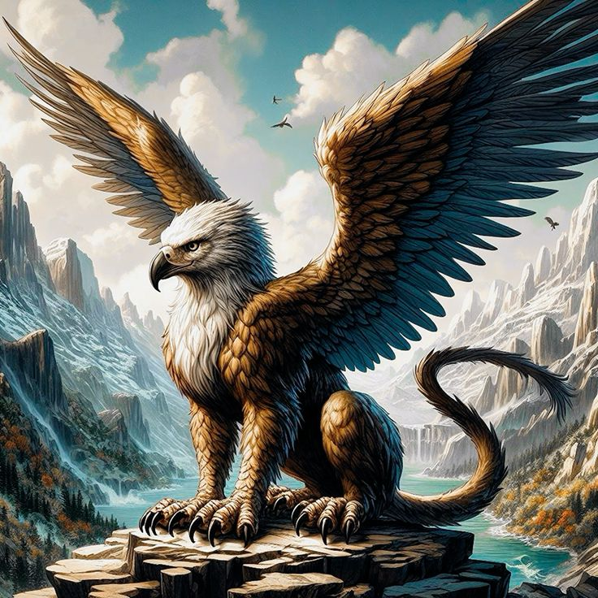
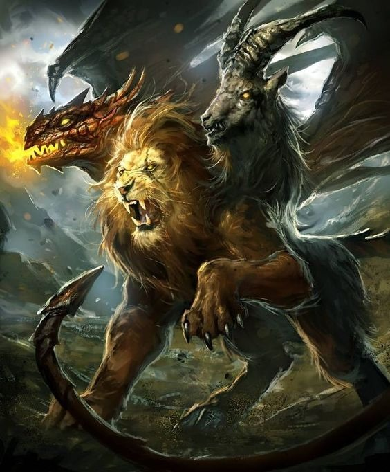

-

Dragão - Uma das criaturas mais poderosas da mitologia, símbolo de força e sabedoria.
-

Fênix - O pássaro que renasce das cinzas, representando a renovação e a imortalidade.
-

Alicórnio - Um cavalo mágico com um chifre, símbolo de pureza e graça.
-

Sereia - Seres marinhos encantadores com a habilidade de seduzir com sua voz.
-

Grifo - Criatura mítica com a cabeça e as asas de uma águia e o corpo de um leão.
-

Quimera - Monstro com partes de leão, cabra e dragão, símbolo de caos e destruição.


{kind=link}
{kind=link}
{kind=link}
O Que São Animais Místicos
Os animais místicos são criaturas que aparecem em mitologias, lendas e tradições culturais ao redor do mundo, e que não existem na realidade como animais comuns. Essas entidades muitas vezes combinam características de diferentes espécies ou possuem habilidades sobrenaturais. Eles são parte fundamental das narrativas culturais e servem a vários propósitos simbólicos e metafóricos.
- Características Sobrenaturais: Animais místicos frequentemente possuem habilidades que vão além das capacidades dos animais reais, como transformação, voo, ou controle sobre elementos naturais. Eles podem ter a habilidade de falar, manipular a realidade ou influenciar eventos.
- Combinação de Animais: Muitas dessas criaturas combinam partes de diferentes animais. Por exemplo, o grifo, com a cabeça e as asas de uma águia e o corpo de um leão, ou o dragão chinês, que pode ter uma forma serpentina com características de diversos animais.
- Simbolismo e Significado: Esses animais são carregados de simbolismo. Eles podem representar ideias complexas como poder, sabedoria, proteção, sorte, ou transformação. Cada cultura atribui a esses seres significados que refletem suas crenças e valores.
Em resumo, Animais místicos são criaturas lendárias que possuem habilidades sobrenaturais, como transformação e controle de elementos naturais. Eles frequentemente combinam características de diferentes animais, como o grifo, que une a águia e o leão. Esses seres são carregados de simbolismo, representando conceitos como poder, sabedoria, proteção e sorte, e refletem as crenças e valores culturais das sociedades que os criaram.